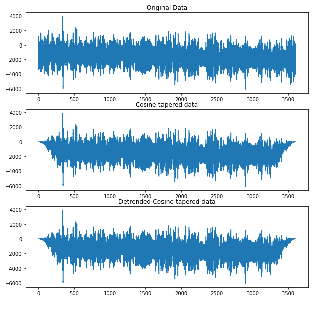

pycheron.sigpro.cosine_bell¶
-
cosine_bell(x, taper=0.1, logger=None)[source]¶ Apply a cosine bell taper to a time series. Cosine taper is applied to the first and last p[i] observations of time series x
Parameters: - x (obspy.core.trace.Trace) – Trace object
- taper (float) – The proportion to be tapered at each end of the time series
- logger (pycheron.util.logger.Logger) – logger object
Returns: Tapered time series
Return type: obspy.core.trace.Trace
Example
#Import function from pycheron.sigpro.cosine_bell import cosine_bell import scipy.signal as sig # Initialize IRIS client client = Client("IRIS") #Define start/end times starttime = UTCDateTime("2011-05-01T00:00:00.000") endtime = starttime + 3600 # Grab data from IRIS web client server with specified starttime/endtime and SNCL st = client.get_waveforms("CI","PASC","00","BHZ", starttime,endtime) print st #Grab out trace, define taper tr = st[0] taper = 0.1 #Taper data with cosine bell using 0.1 taper tD = cosine_bell(tr.data,taper) #Normally you would at least detrend then taper. Type = Linear will also demean. tD = sig.detrend(tr.data,type='linear') tDD = cosine_bell(tr.data,taper)
Plotting
import matplotlib.pyplot as plt #Plot original data and tapered data fig = plt.figure(figsize=(10,10)) ax1 = fig.add_subplot(311) ax1.plot(tr.times(),tr.data) ax1.set_title('Original Data') ax2 = fig.add_subplot(312) ax2.plot(tr.times(),tD) ax2.set_title('Cosine-tapered data') #Plot additional figure ax3 = fig.add_subplot(313) ax3.plot(tr.times(),tDD) ax3.set_title('Detrended-Cosine-tapered data')